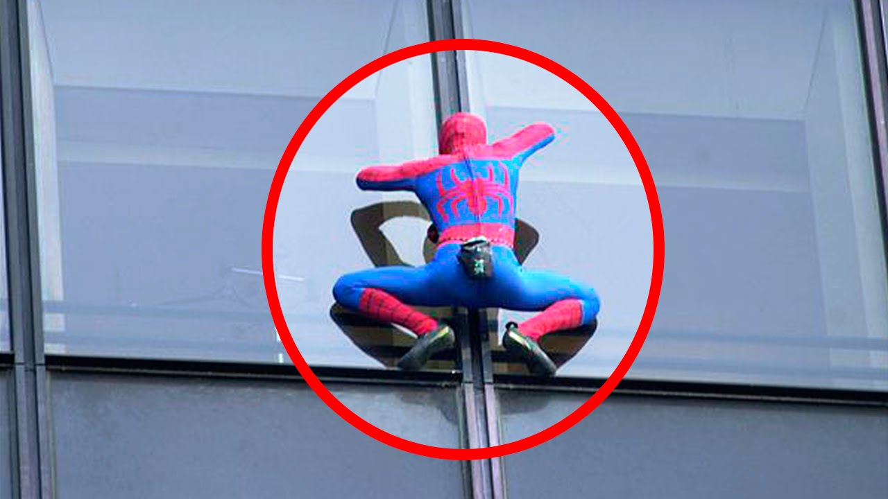

Welcome to carrera caminando
Carrera de la mujer
2021.04.02 18:28¡Bienvenidas a la Mujer Central Lechera Asturiana 2021 !
Muy pronto os informaremos de todas las novedades de las carreras de este año.
Patrocinadores del circuito
Colaboradores del circuito
Beneficiarios
Regístratepara recibir
toda la información Descarga la guía de
la Carrera de la Mujer
Virtual de A Coruña Comprar muñeca sanitaria de
la Carrera de la Mujer
Carrera de la mujer
Inicio ValenciaVitoria
Sevilla
Madrid
Barcelona
Zaragoza
Gijón
A Coruña
Gran final 10K
Sigue la Carrera de la Mujer en...
¿Necesitas más información? Contacta aquí © Todos los derechos reservados Aviso legal | Privacidad | Desarrollo web Deporticket | Contacto